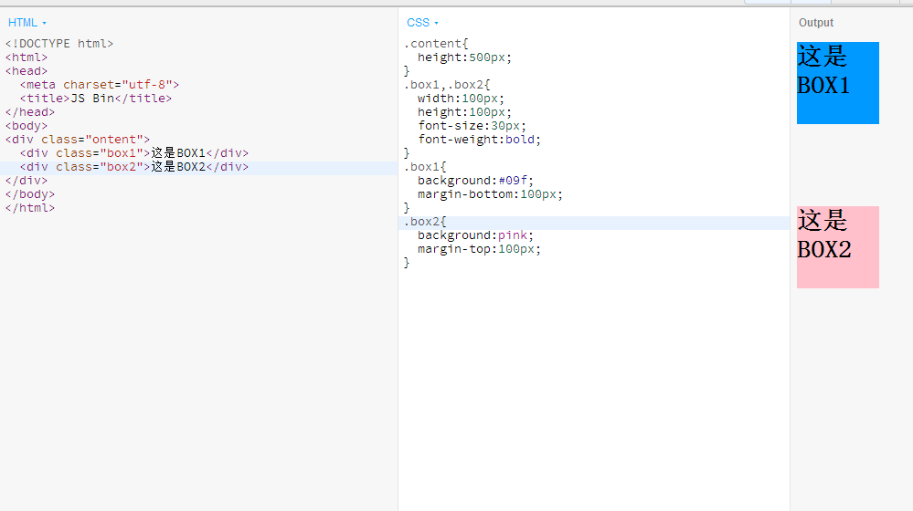
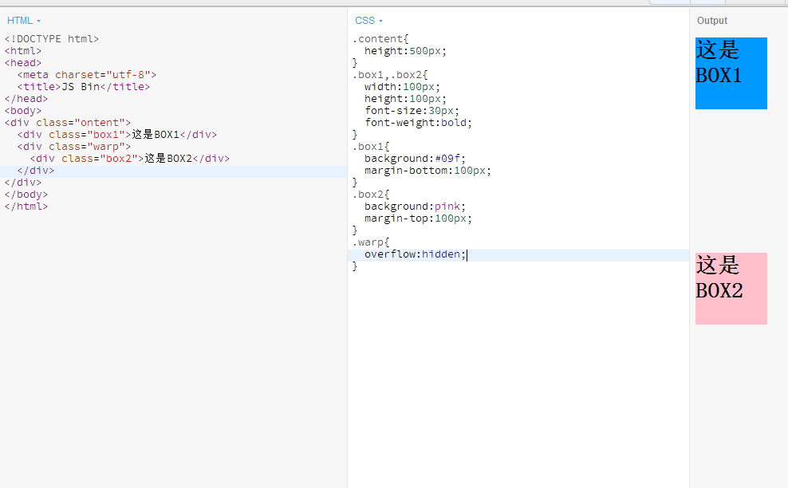

分享人：邱天成
目录
1.背景介绍
2.知识剖析
3.常见问题
4.解决方案
5.编码实战
6.扩展思考
7.参考文献
8.更多讨论
在解释BFC之前，先说一下文档流。我们常说的文档流其实分为定位流、浮动流和普通流三种。而普通流其实就是指BFC中的FC。FC是formatting context的首字母缩写，直译过来是格式化上下文，它是页面中的一块渲染区域，有一套渲染规则，决定了其子元素如何布局，以及和其他元素之间的关系和作用。
常见的FC有BF C、IFC，还有GFC和FFC。BFC是block formatting context，也就是块级格式化上下文，是用于布局块级盒子的一块渲染区域。
BFC就是一个有特定规则的区域，这块区域内的元素只遵循特定规则，不受外部影响。
二者都能达到浮动的效果，不同的是，BFC清除浮动是因为触发到BFC能感知得到浮动元素，计算高度时候浮动元素。而clear清除浮动时候，父元素只计算到.clear的div的高度，但是.clear感知得到浮动元素。当我们添加clear:both的时候，.clear的就被浮动元素挤下去了。
未清除边距合并前：
给其中一个添加一个warp并且触发warp的BFC：
父子元素边距合并
算了。。留给扩展思考吧
参考链接http://www.jianshu.com/p/bf927bc1bed4
父子元素边距合并
感谢大家观看
BY : 邱天成